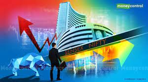

Chief Minister Biren N Singh on friday clarified that he was not resigning fron post,putting an end to a day - long rumour on the issue.Before his clarification ,thousands of demonstrators blocked the Maniour Chief Minister's convoy from proceeding towards Rah Bhawan.The CM eventually told women demonstrater that he was not resigning from the Chief Minister's post
He described the events in Manipur as a tragedy which was "painful" for the state and the country."Peace is the way forward and everybody should now talk about peace and start moving towards it".
EQUITY benchmarks indices scaled fresh all time closing highs on friday , propelled by Intense buying in index heavyweighd Infosys, HDFC twins, Reliance Industries and TCS amid healthy macroeconomics indicators.
Besides foreing funds inflows and a firm trend in the global market further bolster sentiments , traders .
Rally for the third straight day, the 30 share BSE Sensex ju7mpoed 803.14 poibnts or 1.26 % to setle as its lifetime closing high of 64718 .During the day, it zoomed 853 points or 1.33% to reach its record intra day peak of 64,768.